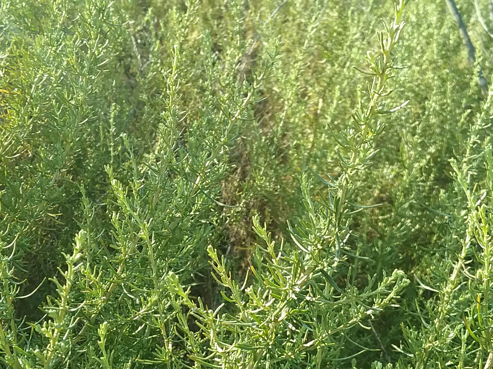
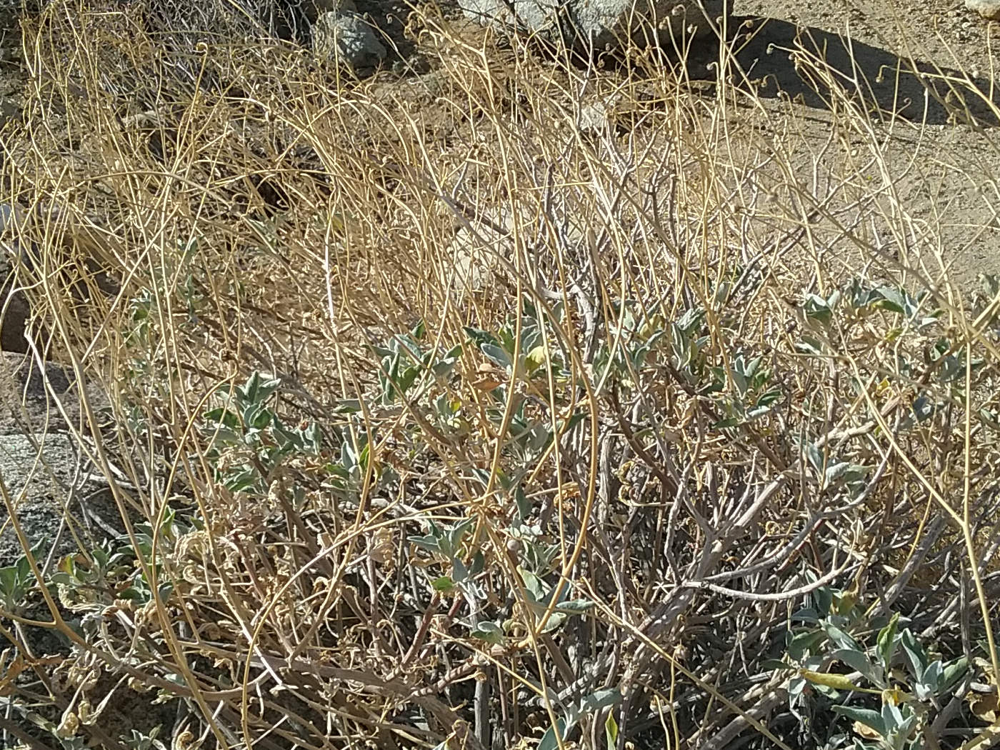

San Diego is a very diverse county and there are several diverse communities of plants that can be found across the county. Three of these plant communities are Coastal Sage Scrub (CSS), Chaparral, and Desert Scrub. Click on the menu items below
or scroll to the relevant sections to see photos (as well as some fun facts) of plants in these communities!
Coastal Sage Scrub
The Coastal Sage Scrub (CSS) plant community is found along coastal regions of Southern California and northern Baja California. It is better adapted for handling less water than chaparral plants and can often be found on xeric (south-facing)
slopes. Examples of plants in this community include...
Chamise
Adenostoma fasciculatum
Most common plant in the CSS plant community
"Fasciculatum" refers to how the leaves are in fascicled bundles
California Sagebrush

Artemisia californica
Despite its name, it is not a member of the sage family
Mission Manzanita
Xylococcus bicolor
Despite its name, it is not a true manzanita
Lemonade Berry
Rhus integrifolia
White Sage
Salvia apiana
Member of the Mint family
Is often sold for its distictive aroma
Black Sage
Salvia mellifera
Has a distinctive sage-like aroma
Coastal Live Oak
Quercus agrifolia
A member of the black oaks subgenera
Chaparral
Chaparral is another major plant community found in San Diego county. It is typically characterized by larger plants and increased demands for water. It is more likely to be found on shady mesic (north-facing) slopes. Some examples of plants
in this community include...
Laurel Sumac
Malosma laurina
Although it is in the same sumac family as poison sumac and poison oak, it is not poisonous and is safe to touch
Sometimes called the "taco plant" because of its leaf shape
Engelmann's Oak
Quercus engelmannii
A member of the white oaks subgenera
Chaparral Broom
Baccharis serothoides
Its leaf clusters are broom-shaped
Flat-top Buckwheat
Eriogonum fasciculatum
Good at attracting bees and butterflies
San Diego Sunflower
Bahiopsis laciniata
Desert Scrub
Within desert ecosystems, there are a number of different desert plant communities that have arisen to cope with different regional factors. Around dry lakebeds, one might find salt-tolerant plants, in locations with looser soil conditions,
one might find plants with larger root systems, and in locations with little shade, one will find lighter-colored plants. These adaptations are all to ensure long-term survival of the different plant species. Several of these plant species
include...
Ocotillo
Fouquieria splendens
Despite its spiny exterior, Ocotillo is not a cactus
Chuparosa
Justicia californica
Its Spanish name origin refers to how it is pollinated by hummingbirds
Creosote Bush
Larrea tridentata
Rings of creosote bushes can potentially live for thousands of years
Creosote has been used in Native American medicine
Brittlebush

Encelia farnosa
A member of the sunflower family
Beavertail Cactus
Opuntia basilaris
Desert Willow
Chilopsis linearis
Desert Lavender
Hyptis emoryi
Map (click to explore)
Want to check out some of these plants for yourself? Both Grossmont College and Mission Trails Regional Park offer great plant gardens with labeled coastal sage scrub and chaparral plants! Check them out!
 Xylococcus bicolor
Xylococcus bicolor
 Quercus agrifolia
Quercus agrifolia
 Justicia californica
Justicia californica